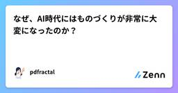
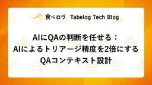
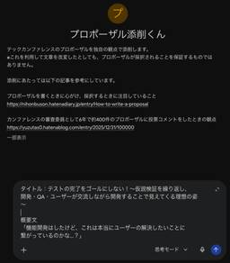

直近1週間の更新
11/7 (土)

ディクテーションの自動採点で「つづりミス」と「別の単語」を分ける線を、2回引き直した  Zennの「Test」のフィード
Zennの「Test」のフィード
TOEICの学習アプリを作っている。ディクテーション（聞こえた英文を打ち込む）の画面が、ずっとこうなっていた。単語ごとに自己判断してください。1. He's [◯ 聞き取れた] [✕ 聞き取れなかった]2. placing [◯ 聞き取れた] [✕ 聞き取れなかった]3. a [◯ 聞き取れた] [✕ 聞き取れなかった]4. paper [◯ 聞き取れた] [✕ 聞き取れなかった]...8語の文なら、8行×2ボタン。 毎回これを押す。ある日気づいた。正解の英文も、打ち込んだ文字列も、画面にある。突き合わせれば機械が判定で...
2時間前

2026年アイデアログ開発チーム合宿実施レポート Zennの「QA」のフィード
株式会社アイデアログでCTOをしている松川です。会場ベストサーチやスペなびといった、会場・スペース探しのサービスを作っています。10月は、開発チームの合宿と、社外のCTO向けイベント（CTO Night & Day）に参加しました。なお、10月19日〜21日に参加したCTO Night & Dayは、会場で聞いた話を外に出さないルールのイベントです。なのでここに書くのは、合宿で起きたことと、イベントから帰ったあとに自分が考えたことだけです。 合宿のテーマを「連携」にした10月15日〜16日に、開発チーム12名で1泊2日の合宿をしました。去年の合宿のテーマは「成...
7時間前

JSON台帳の部分読みで、同じ結果をどう確かめるか Zennの「Test」のフィード
再試行で通った監視を、そのままにできなかった定期処理の結果が共有先へ反映されたかを、AWS Lambdaで監視していました。監視は、過去の結果を蓄積するJSONファイルを毎回丸ごと読み、今回の処理に関係するレコードを照合します。この記事では、そのJSONを「台帳」、1回の定期処理を「run」と呼びます。あるとき、監視がタイムアウトしてアラームが鳴りました。時間切れになると、その実行では検査を完了できません。再試行は正常に終わり、データへの影響はありませんでしたが、ログを振り返るとメモリ使用量が割り当ての上限へ近づき続けていました。まずメモリを増やして止血しました。その後、監視が...
7時間前

OCRの同値分割と境界値、実際のテストコードで見る Zennの「Test」のフィード
対象はOCRエンジンそのものではありません。エンジンが返した結果を受け取ったあとの、ルールで書かれた部分です。アップロードサイズの上限、信頼度による振り分け、識別番号(IMEI)の妥当性チェックの3つを扱います。認識精度のほうは、出力が毎回少しずつ揺れるので、サンプル画像セットと閾値付きの比較で見ています(その方法は前に書きました)。後処理は入力が決まれば出力も決まるので、古典的な技法がそのまま効きます。そして、実際に不具合が出やすいのもこちらでした。コードはこの記事のために新しく書いたもので、実際の案件のコードではありません。上限の10MiBや信頼度0.90も記事用の値です。テスト...
11時間前

なぜ、AI時代にはものづくりが非常に大変になったのか？ Zennの「品質」のフィード
はじめにAIの発達によって、誰でも簡単にものづくりができる時代になりました。プログラムを書き、イラストを描き、文章を作り、設計図を引くといった作業は、かつて専門的な技能を習得した人間でなければ困難でした。しかし、現在ではAIに指示するだけで、一定以上の品質を備えた成果物を短時間で得られます。ものづくりの参入障壁が劇的に下がったことは間違いありませんが、ここには重大な逆説があります。ものを作ることが簡単になったにもかかわらず、ものづくりによって価値を生み出すことは、かえって難しくなったのです。なぜなら、AIが得意とする品質と、人間が本当に求める品質には大きな違いがあり、しかもAIの普...
1日前
11/6 (金)

「直った」の確信を、代わりの合図から取らない Zennの「Test」のフィード
ある週、同じ形の失敗を何度か踏んだ。どれも「直したはず」「できているはず」と思い込んでいて、実際には別のものを見て安心していた、という失敗だった。あとから並べてみると、確信を「本物の状態」ではなく「その手前の合図」から取っていた点で共通していた。 CI が緑でも、中身は入れ替わっていなかったデプロイのジョブは緑だった。ところが中のステップは「組み立ては別の場所でやる」という理由で SKIPPED を出して、そのまま正常終了していた。緑はジョブが落ちなかったことしか保証しない。本番に入っているコミットと、配備の状態ファイルを読んで、ようやく「何も入れ替わっていない」と分かった。それ...
1日前

【JaSST'26 Niigata 参加レポート】AIに任せた品質は、誰が見立てるのか  ソフトウェアテストタグが付けられた新着記事 - Qiita
ソフトウェアテストタグが付けられた新着記事 - Qiita
はじめに2026年9月18日に開催された JaSST'26 Niigata にオンライン参加してきました。今回のテーマは「AI時代のQA Re-Engineering —— 思考の純度を高め、品質の壁を突破する」でした。LayerX の中野直樹さんによる基調講演「AIに...
1日前

hasAttribute は aria-disabled="false" でも true を返す。属性名だけ置換したらテストが空洞になった Zennの「Test」のフィード
!2作目のポートフォリオとして「Hubpin」（分散した発信を1か所に集めるハブサイト）を作りながら書いています。リポジトリ: https://github.com/Matsutake29/hubpinNext.js（App Router） + Supabase + Tailwind CSS並び替えボタンで、フォーカスが消える不具合がありました。キーボードで切り分けると、消えるのは「移動先が1番目のとき」だけで、原因は disabled={index === 0} でした。disabled な要素は、フォーカスを保持できません。そこで disabled を aria-...
1日前

AIエージェントのテスト設計 ― 実行結果と判断過程をどう評価するか Zennの「Test」のフィード
従来のWebアプリケーションでは、入力に対して期待する処理結果を定義し、テストで検証する。AIエージェントでも基本は変わらない。ただし、LLMがToolの選択や実行順序を判断する場合、同じ依頼でも異なる手順で処理される可能性がある。そのため、正しい業務結果が得られたかだけでなく、そこに至る操作が適切だったかも評価する必要がある。本記事では、社内の経費精算システムを例に、AIエージェントの機能テストを考える。特に、結合テスト・システムテストでLLMの振る舞いをどう評価し、合格基準を設計するかに焦点を当てる。性能・負荷・障害耐性などの非機能テストは対象外とする。 1. 従来のWe...
1日前
Amazon Bedrockで挑む、自治体AIコンタクトセンター（AWSぶっちゃけ討論会vol.7） SHIFT EVOLVE グループの新着イベント
開催日時: 2026/12/16 19:00 ～ 20:30<br />開催場所: オンライン<br /><br /><h2>Amazon Bedrockで挑む、自治体AIコンタクトセンター（AWSぶっちゃけ討論会vol.7）</h2><p>AWSを長年利用してきた人にしかわからない、リアルな問題や対策法をざっくばらんにディスカッション。教科書に載っていない、検索しても出てこない、AWS活用の現実を掘り下げます。</p><p>今回は、AWS Summit Japan 2026でCfPを通過したセッション<a href="https://speakerdeck.com/shift_evolve/20260626-taku-nishizawa-and-satoshi-torano" rel="nofollow">『区民の問い合わせ、AIにどこまで任せる？ 品川区×SHIFTが挑む自治体音声AI実証の現在地』</a>を題材に、当日15分の講演枠では語りきれなかった開発の裏側...
1日前

複数のプラットフォームで画像比較を成功させるための方法  Ranorex Blog - テスト自動化ツール 『Ranorex』
Ranorex Blog - テスト自動化ツール 『Ranorex』
※本記事は、Ranorexの画像検証に関する基礎知識をお持ちの方を対象としています。※Ranorex ハンズオンセミナー(初級・中級)を受講することで、Ranorexの画像検証について学習いただけます。 Ranorexの […]The post 複数のプラットフォームで画像比較を成功させるための方法 first appeared on テスト自動化ツール 『Ranorex』.
1日前

善意では、人は動かない ── Folio v3 公開βのしくみ Zennの「Test」のフィード
この記事は、Folio を運営する株式会社AKIMA が書いています。2026年11月6日に、Folio v3 の公開βを始めました。「テストしてください」X で何度つぶやいても、誰も触ってくれない。善意では、人は動かない。だから Folio は、報酬を払って、契約で動かすことにしました。作っただけで、終わらせない。 Folio v3 とはアプリは作れた。でも、触ったのは自分と AI だけ。この状態で公開すると、初めて使う人がどこで止まるかを知らないまま出すことになります。出した後に、最初に使ってくれる人へどう届けるかも、作った人が一人で抱えがちです。Folio v3...
2日前
11/5 (木)
AIに採点させて品質を上げる：100点満点の採点役と、直す役を分けた改善ループ Zennの「品質」のフィード
AIにコードを直させると、「改善しました」と報告してくれます。でも、本当に良くなったのかは、報告だけでは分かりません。この記事では、AIに採点させて、その点数を上げていく改善ループを紹介します。個人で公開しているリポジトリ15個に対して、採点と修正を5周まわしました。平均点は73点から、およそ85点まで上がりました。一番のポイントは、採点する役と直す役を分けることです。 なぜ役を分けるのか同じAIに「採点して、直して、また採点して」と頼むと、点数は簡単に上がります。ただしそれは、品質が上がったからとは限りません。自分が直したところを、甘く見てしまう「直した」という記録（変...
2日前

並行テストは、割り込みが起きたことまで確かめる Zennの「Test」のフィード
全通り試しても、直列にしか動いていなかった共有ファイルをBotと再生成用のLambdaが更新する処理で、追記が消えないことを確かめたかった。読む処理と書く処理の間へ別の更新を差し込むテストは、すでにありました。ただ、AIエージェントが並行処理のセルフレビューをするたびに、割り込みを再現するスクリプトを作り直していました。そこで、操作の直前で書き手を止め、どちらを1手進めるかを全通り試す部品へ移しました。ところが、部品自身のレビューで、最初の操作だけを止める設定でもテストが通ることが分かりました。2本が同時に待っていても、片方が読み書きを全部終えてから、もう片方が動いていたのです。...
2日前

Playwrightテスト失敗時にスクリーンショットを自動保存する（GitHub Actions） 1 Zennの「Test」のフィード
1 Zennの「Test」のフィード
GitHub ActionsでPlaywrightのE2Eテストを実行している場合、テスト失敗時に失敗タイミングのスクリーンショットを残しておくと原因調査が楽になると思い、設定してみました。特に面倒な事とかはしてないのでメモ的に....。 設定方法playwright.config.tsexport default defineConfig({ use: { screenshot: 'only-on-failure', },});workflow.yml- name: Run Playwright tests run: npx playwright...
2日前
BLOG de プレゼントキャンペーン2026 MagicPod Blog
🎄MagicPod BLOG de プレゼントキャンペーン2026🎁今年もやります！年末恒例のMagicPod BLOGキャンペーン✨ご参加いただいた方全員に、素敵なプレゼントをお送りします🎁💡参加方法「MagicPod」に関する記事を公開（500文字以上）公開後、申し込みフォームからキャンペーンにお申し込みこのページの「投稿記事一覧」にあなたの記事が追加されます（掲載に同意いただいた方のみ）個人ブログ、Zenn、Qiita、note、所属企業のテックブログなど、投稿先は自由です。✨ 記事テーマ例MagicPodを使ってみた感想やお気に入りの機能「MagicPod MCPやってみた」など、AIと組み合わせた活用例新機能を試してみた話テスト自動化の工夫やチームでの取り組みうまくいかなかったこと、最初につまずいたところとその解決策MagicPodイベントやコミュニティ参加レポートなど、「MagicPod」に関する内容なら自由です！失敗談も、同じところで悩む誰かの助けになります。🎁 プレゼント内容キャンペーン参加者全員に、以下4つの中からお好きなノベルティを1点プレゼント！🚀 早...
2日前

AIエージェントの試行錯誤に「見た目が崩れていないか」の検査を組み込む 判定をLLMに任せない理由 Zennの「Test」のフィード
弊社（アイデアマンズ）はページスピード改善の仕事で、主にフロントエンドの改善を提案しています。速くするためにHTMLやCSS、JavaScriptへ手を入れますが、見た目が変わってしまっては困ります。速くなっても表示が崩れるのでは意味がありません。以前はこの確認を目視でしていました。ところが改善の試行錯誤をAIエージェントへ任せるようになり、人間の目視では追いつかなくなりました。この記事では、AIの試行錯誤のループに「見た目が変わっていないか」の検査を組み込んだときの設計判断を整理します。検査の判定をLLMに任せなかった理由と、機械的な比較を実用にするための2つの工夫が中心です。...
3日前

AIは嘘をつく前提で。仕様準拠を exit code で判定する「spec-gate」を作った Zennの「Test」のフィード
TL;DRAI が書いたコードが 自然言語の仕様（Markdown / Mermaid / Figma / 画像）を守っているか を、エージェントの自己申告を一切使わずに exit code で判定するハーネス spec-gate を作りました仕様とコードを直接比べることはしません。間に claim（検証できる形にした仕様の主張） を挟み、「AI が抽出 → 人間が承認 → 機械が判定」の3段に分けています。人間がやるのは承認だけです承認済み claim の編集、承認そのもの、プランの検証行の書き換えは、hook-gate のルールでエージェントには できない ようにしていま...
3日前

pgregory.net/rapidで学ぶプロパティベーステスト Zennの「Test」のフィード
最近業務でpgregory.net/rapidとPBTに初めて触れる機会があったので、これらについて調べてみました。AIによってPBTが再発見されつつありますが、PBT自体は古くからあるテスト手法です。私自身はGoで開発者人生をスタートしたこともあり、テストといえばテーブル駆動テストやtestifyなどのライブラリを使ったassertionによるものがメインでした。なのでPBTについては初めて知ることが多かったです。この記事は、同じようにassertionによるテストを中心に書いてきた人に向けて、調べた内容をまとめたものです。ざっくりPBTとは何かが理解できる、Goでrapidを使って...
3日前
11/4 (水)

引き継ぎ時に消さないでおきたい、番号付きに見える段落のバックスラッシュ ソフトウェアテストタグが付けられた新着記事 - Qiita
レビュー中のMarkdownに 7\. Inspect と書かれていると、バックスラッシュを余分な記号だと思うかもしれません。しかし、ドットの直前にあるその記号は、数字とドットをリストの開始記号として解釈させないための手掛かりです。削除すると、普通の段落として渡したかった内...
3日前

AI生成コードの検証をCIに埋め込む — スキャナが届かない「認可」を自動テストで埋める Zennの「Test」のフィード
AI コーディングアシスタントが当たり前になって、コードを書く速度は確実に上がりました。GitHub が 2022 年に公開した研究では、Copilot を使った被験者は同じタスクを約 55% 速く完了しています。数字の大小より重要なのは、この速度差がそのまま「レビュー待ち行列」と「未検証のコード」に積み上がるという点です。ここで起きがちなのが、次のような錯覚です。「CI は回しているし、SAST も SCA も入れている」「四半期ごとにペネトレーションテストもやっている」「だから検証は足りている」実際には、この三つを足しても認可の穴はほぼ素通りします。本記事では、その理由...
3日前

改稿は終わっていた。確認用コピーは旧稿のままだった Zennの「Test」のフィード
技術記事を改稿し、ローカルの完了記録には更新後のhashも残っていました。しかし、確認用に渡していたクラウドのコピーは、以前の原稿のままでした。URLが同じでも、そこにある本文まで同じとは限りません。今回の不一致は、原本の改稿と、確認用コピーへの反映を別々に照合したことで見つかりました。 ファイル名とURLでは、どの版か分からない2026年10月20日の保存記録では、ローカルの改稿は5,387 bytes、確認用コピーは3,171 bytesでした。改稿では検証範囲を追記していましたが、確認用コピーにはその前の説明が残っていました。確認用コピーの全文を、保存していた旧稿と比較す...
3日前

AIにQAの判断を任せる：AIによるトリアージ精度を2倍にするQAコンテキスト設計 70 QA - Tabelog Tech Blog
目次 はじめに これまでのAI4QAの取り組み 今回の取り組み AIにトリアージさせるためのコンテキスト設計 何を渡すか どう渡すか 判定の基準をどこに持たせるか 結果 定性的評価：トリアージができた3つの例 定量的評価：トリアージ精度が2倍に まとめ 採用情報 はじめに こんにちは。食べログカンパニー 開発本部 品質管理部QAチームの中尾です。飲食店プロダクト領域で、E2Eテストの自動化とQA工程のAI化に取り組んでいます。 これまでのAI4QAの取り組み 食べログの品質管理部では、「AI4QA」というプロジェクトを進めています。AI4QAは、QA業務の全てをAIが担う状態を目指し、テスト設…
3日前

「ハイキュー!! 1 (日向と影山)」がシリーズにまとまらなかった。巻数のあとの括弧つき副題を正規表現で拾う Zennの「Test」のフィード
蔵書管理アプリ「本棚（hondana）」では、本のタイトルから「シリーズ名」と「巻数」を推定して、漫画をシリーズごとにまとめています。推定のしかたは前の記事に書きました。そのあと実機でバーコードを読み、『ハイキュー!!』を登録すると、シリーズにまとまりませんでした。この記事は、その原因と直し方です。 書名が「巻数 (副題)」の形だったopenBD が返した書名は、こうでした。ハイキュー!! 1 (日向と影山)ハイキュー!! 2 (頂の景色)巻数のあとに、括弧つきの副題が付いています。前の記事の正規表現は、巻数が書名の末尾にあることを前提にしていました。final _vol...
3日前

保存データを守るQAケースブック｜操作・想定値・不具合報告の6実例 Zennの「Test」のフィード
保存・復元のあるアプリを作る個人開発者向けに、ダミーデータの準備、操作、期待値、不具合報告、AI・開発者への修正依頼、修正後の確認を6例でまとめた静的な教材です。BOOTHの同名6ケースPDF版と同じ6題材をWeb閲覧用に再構成しています。重複購入にご注意ください。PDF本体は含みません。はじめに・復元1ケース・記録ひな形は無料です。本体アプリや失敗条件の模擬機能、個別の診断・修正・添削は含みません。実DB・通信・端末間の競合や、すべての不具合の発見を保証するものではありません。AI支援で制作しています。
4日前
保存データを守るQAケースブック｜操作・想定値・不具合報告の6実例 Zennの「QA」のフィード
保存・復元のあるアプリを作る個人開発者向けに、ダミーデータの準備、操作、期待値、不具合報告、AI・開発者への修正依頼、修正後の確認を6例でまとめた静的な教材です。BOOTHの同名6ケースPDF版と同じ6題材をWeb閲覧用に再構成しています。重複購入にご注意ください。PDF本体は含みません。はじめに・復元1ケース・記録ひな形は無料です。本体アプリや失敗条件の模擬機能、個別の診断・修正・添削は含みません。実DB・通信・端末間の競合や、すべての不具合の発見を保証するものではありません。AI支援で制作しています。
4日前

LLMの出力が毎回違ってもpytestでassertできる「決定的チェック」5選 Zennの「Test」のフィード
LLMアプリのテストを書こうとして、「出力が毎回違うから assert out == expected が書けない」と手が止まったことはないでしょうか。実は、出力の文面が揺れても必ず守られていなければならない性質はたくさんあります。そこだけをチェックすれば、揺れるLLMでも普通にpytestで落とせます。本記事ではこれを「決定的チェック」と呼び、すぐ使える5つを紹介します。題材は、商品レビューを読んで {"sentiment": ..., "summary": ..., "topics": [...]} を返す小さなアプリです。各チェックは「出力 out（dict）とケース case...
4日前

取引所に逆指値を置いたら、Botが売れなくなった。テストの代役が応答の形を隠していた Zennの「Test」のフィード
暗号資産の自動売買Botを作っています。口座2万円ほどの少額で動かしながら、検証と本番の動きが一致しているかを毎週点検しています。今回は、安全のために足した仕組みが、Botの売りを止めていた話です。テストは全部通り、実機でも「注文が置けた」ことを確かめて、完了と書いていました。原因はたった1行の ["data"] でした。先に断っておくと、成績の話ではありません。実際の取引が1件絡みますが、1件で言えることは「その経路が動いた」までです。 1. 足したもの: 取引所に置く-15%の逆指値それまでのBotは、損切りを自分の中だけで持っていました。15秒ごとに価格を見て、条件に触...
4日前

復元エラーの後も元データは残るか：JavaScriptの8入力で確かめる Zennの「Test」のフィード
復元の失敗を表示できても、元データを保持できているとは限りません。先に既存データを空にした後でJSONの解析に失敗すると、画面にはエラーが出ても元の2件は消えます。この記事では、人工データだけを扱うJavaScriptの最小モデルで確認します。コード全文を載せているので、商品や外部ライブラリを購入せず再現できます。 この例で決める復元形式version は 1notes は1件以上の配列各レコードは空でない文字列の id と、文字列の body を持つid の重複は拒否する空のバックアップを拒否するのは、この例の仕様です。実アプリで0件への復元を許すかは、別に...
4日前
復元エラーの後も元データは残るか：JavaScriptの8入力で確かめる Zennの「QA」のフィード
復元の失敗を表示できても、元データを保持できているとは限りません。先に既存データを空にした後でJSONの解析に失敗すると、画面にはエラーが出ても元の2件は消えます。この記事では、人工データだけを扱うJavaScriptの最小モデルで確認します。コード全文を載せているので、商品や外部ライブラリを購入せず再現できます。 この例で決める復元形式version は 1notes は1件以上の配列各レコードは空でない文字列の id と、文字列の body を持つid の重複は拒否する空のバックアップを拒否するのは、この例の仕様です。実アプリで0件への復元を許すかは、別に...
4日前

XLSXのメタデータ削除をPythonで検証する：属性値とZIP部品の回帰チェック Zennの「Test」のフィード
メタデータ用XMLのハッシュが変わっても、「作成者名が消えた」とは限りません。別の日時だけが変わった可能性もあります。この記事では、小さな検証用XLSXを使い、処理後の属性値を読み取る確認と、属性以外のZIP部品が変わっていないかの確認を組み合わせます。XLSXを生成・加工する処理の回帰チェックを作りたい方が対象です。比較コードはクリーナー固有のAPIを使いません。AI MetaCleanプロジェクトで得た検証記録を、AIの執筆支援を用いてまとめました。コードは実際の入力・ダウンロード出力と、意図的に壊した出力で実行しています。画像は私たちの実際のツール画面です。氏名・会社名・案件コ...
4日前

An Investigation on Numerical Bugs in GPU Programs Towards Automated Bug Detection  arXiv Query: search_query=all:"software testing"&id_list=&start=0&max_results=10
arXiv Query: search_query=all:"software testing"&id_list=&start=0&max_results=10
General-purpose graphics processing unit (GPU) computing has emerged as a leading parallel computing paradigm, offering significant performance gains in various domains such as scientific computing and deep learning. However, GPU programs are susceptible to numerical bugs, which can lead to incorrect results or crashes. These bugs are difficult to detect, debug, and fix due to their dependence on specific input values or types and the absence of reliable error-checking mechanisms and oracles. Ad
4日前
11/3 (火)

結合見出しのある表をMarkdownで渡す前に、列の意味を引き継ぐ ソフトウェアテストタグが付けられた新着記事 - Qiita
開示：この記事はYan Wang / LensUp向けにGPT-6.1 Terraで大部分を下書きし、Codex AIがソースと事実を確認しました。Yan WangはLensUpの関係者です。記載した結果は、変更していないconvertDocxと既存のAnyDoc WASM...
4日前

DOCXの文字を太く大きくしても見出しになるとは限らない：入力プロパティから切り分ける ソフトウェアテストタグが付けられた新着記事 - Qiita
開示：この記事はYan Wang / LensUp向けにGPT-6.1 Terraで大部分を下書きし、Codex AIがソースと事実を確認しました。Yan WangはLensUpの関係者です。記載した結果は、変更していないconvertDocxと既存のAnyDoc WASM...
4日前

#58 中継役のAstraが工程を決め始めた。Codexマルチエージェントの自律性とコストの境界 Zennの「QA」のフィード
🍔 はじめにこんにちは！久しぶりの更新です。Codex Desktopで、多数のテストケース（以下、TC）の改善をマルチエージェントで進める検証をしています。目的は、TC改善を終わらせることだけではありません。一般的なデスクトップ環境で、AIによる業務効率化がどこまで再現できるか、どのくらいの作業量まで費用対効果が成り立つかを確かめることです。そのため、検証環境はCodex Desktopに統一しています。CLIに切り替えることは解決策にしません。前半の工程までは、期待どおりの速度で進みました。しかし差分修正の工程に入ると、進みが極端に遅くなりました。調べてみると、メインチャ...
5日前
11/2 (月)

プロポーザルを添削してくれるGEMを作成しました！ ブロッコリーのブログ
はじめに 技術系カンファレンスでは、一般公募（プロポーザルの募集）を行い、運営が審査して採択をする形式があります。 私は昨年、普段プロポーザルを提出し採択されている経験と、プロポーザルの採択者としての経験を基に、プロポーザル提出時に気にすべきポイントを記事にしました。 nihonbuson.hatenadiary.jp ただし、このような記事を書くと、 普段から気にしている人はさらに取り入れてくれる プロポーザルを提出したことがない人や、プロポーザルを提出しているが中身をあまり精査できていない人は、記事の読者対象にしたい人にも関わらず読んでもらえない とった状況を生み出します。 そこで、プロポ…
5日前

コードはAIが書く。品質は自分が守る ── 元QAが1人で作ったiOSアプリが世界最大級ハッカソンの最終選考へ Zennの「QA」のフィード
はじめにコードは、ほとんど書いていません。それでも、品質の責任は自分にあります。英単語学習アプリ「Word Spell Master」を1人で開発し、2026年9月19日に App Store で公開しました。このアプリは、世界最大級のハッカソン「RevenueCat Shipaton 2026」（参加者3万人弱）で、最終選考に進出しました。コードの大半は AI（Claude Code）が書いています。私の担当は、次の4つです。設計の方針を決める受け入れの基準を決めるAI が出した変更を、その説明・テストの結果・実機での動きで確かめて、取り込むかを判断する出してよい...
5日前
Metamorphic Testing for Evaluating Robustness of Sentiment Analysis Models arXiv Query: search_query=all:"software testing"&id_list=&start=0&max_results=10
Machine learning systems are challenging to test using traditional software testing methods because their behavior is learned from data rather than explicitly programmed. This challenge is particularly significant in natural language processing (NLP), where small input variations can lead to unexpected model behavior. Conventional evaluation metrics, such as accuracy and F1-score, often fail to capture such inconsistencies. Metamorphic testing addresses this limitation by evaluating expected rel
6日前
11/1 (日)
ソフトウェアテスト自動化カンファレンス2026
1 テスト自動化研究会 グループの新着イベント
開催日時: 2026/12/12 12:50 ～ 18:00<br />開催場所: オンライン<br /><br /><h1>オンライン開催</h1><p>「ソフトウェアテスト自動化カンファレンス2026」はオンライン開催になります。<br>コミュニケーションの手段として下記のツールを利用します。どちらも無料でご利用いただけます。</p><ul><li>Discord（スケジュール、講演中のコメント、Ask the Speaker）<br> <a href="https://discord.com" rel="nofollow">https://discord.com</a></li><li>Zoom（講演のストリーム配信）<br> <a href="https://zoom.us" rel="nofollow">https://zoom.us</a></li>...
6日前